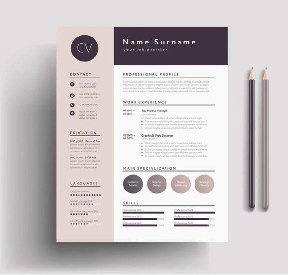

Your resume is often the first impression you make on employers. A clean, well-organized resume highlights your skills and makes it easy for recruiters to see why you're a great candidate. Whether you're applying for your first job or your next promotion, a well-crafted resume is essential.
Why Is A Good Resume Important?
How Can We Help You?
Our Resume Builder makes creating a professional, eye-catching resume fast and easy. Choose from a variety of templates and simply fill in your details. We’ll take care of the rest—helping you stand out and get noticed. Whether you’re a recent graduate, a seasoned professional, or someone switching careers, we have the tools to help you succeed.

Key Features
Template Selection
Choose from a variety of pre-designed templates to match your personal style.
Customization
Customize the design, content, and layout to suit your unique career goals.

Instant Download
Once your resume is ready, you can instantly download it in multiple formats like PDF or Word.
Get Started on Your Perfect Resume
Creating a professional resume has never been easier. With our intuitive and easy-to-use builder, you can craft a standout resume in just minutes. Choose your preferred template, fill in your details, and instantly download your customized resume in formats like PDF or Word. Whether you’re looking to land your first job or advance in your career, our resume builder is the perfect tool to help you succeed.
Generate Your Resume Now